I was asked: “Does anyone know how the Eurotalk App works? I am a complete beginner and these language learning programs, always help me the best.”
I've used it. It isn't even vaguely "immersion", though it may help you learn a few short vocabulary lists. That's a start, but it won't get you to conversational. And Gaelic culture is essentially communal: conversation, song and story -- that is the goal. The same can be said about the Atlantic Gaelic Academy's Skype classes, or "beag air beag", or the Mango Languages programme, or RadioLingua's charming "One Minute Gaelic" podcast. They can get you started, but they are unlikely to bring you to fluency. To acquire fluency, you need immersion.
Immersion is about USING Gaelic in the everyday things you do, and having the sounds of it going on all around you. And it works. There are a lot of vernacular Gaelic recordings on the web. Make a play-list of it and put it on a continuous loop on your devices. Play it on the radio while you're doing household chores. Watch Gaelic TV -- Machair is available on youtube, and Bannon can often be found on streaming services. Listen to lesson tapes (Speaking Our Language is good, or Can Seo -- both on Youtube -- or the CDs from Complete Gaelic (which you can buy as a Kindle book) or Catriona NicIobhair's "Gaelic through Conversation" (http://www.gaeliccollege.edu/.../gaelic-through.../) while you are driving or walking. Set your operating system language to Gaelic on your i-Devices or Mac (or lobby Windows and Google to provide Gaelic for your non-Apple devices). Install the Firefox browser and Open Office in Gaelic. It will slow you down, but you're probably familiar enough with computers to learn quickly that "Faidhle" means "File" and "Deasaich" means "Edit". Seeing "DiMàirt, 17 dhen Fhaoilleach"every time you open your phone will teach you quickly the names of the weekdays and months.
All that being said, teachers and other learners can waste a very great deal of time trying to convince one another that "X" is the only way to learn, or that they are only capable of learning by method "X". If something helps you learn, then use it. If someone you trust advocates a method, then try it. If you have the time, use as many methods as actually work for you. Frankly, if you sincerely believe that you "must" study grammar in order to learn, no-one is going to convince you differently and you might as well get on with it and stop wasting time arguing. With increasing experience, most learners see that translation-based techniques should be avoided (see the sidebar about language-learning and the brain) and unceasing aural repetition should be emphasised. And those are the identifying features of immersive learning. Other language-learning tools can give you the bare minimum you need to get started. In some cases they can supplement immersive learning. But immersion is key and without it your learning curve is cut short -- and unless you live in Cape Breton or the Hebrides, immersion is something you have to do to yourself.
As of Summer 2017, Learning Gaelic On Your Own Course & Guidelines is the latest handbook from the Moray Language Centre, a think-tank dedicated to producing targetted Gaelic courses that allow the complete beginner to break through to speaking Gaelic in 200 hours or less. You can obtain your copy of the handbook for $25. After you have paid, the handbook will be emailed to you in PDF format from the Moray Language Centre. This web-page is not a substitue for the Moray Language Centre's Learning Gaelic On Your Own Course & Guidelines.
Moray Language Centre courses use a proven effective method referred to as “Total Immersion Plus” (or “TIP”) developed by the Centre's CEO, Finlay M. Macleod. With the TIP method, students hear and speak only Gaelic during classes: whole sentences at a natural spoken tempo, no vocabulary lists, no reading or writing, and no grammer lessons. Now TIP may be fine for those in Cape Breton or the Hebrides where they can find classrooms with fluent presentors! But what about the rest of us, who are beginning the work of rebuilding diaspora Gaeltachds “on our own”? Fortunately, we have Gaelic radio programmes that can be recorded, both on BBC Alba and CBC Cape Breton; and a wealth of recorded Gaelic in university archives throughout the world. We will immerse ourselves in those recordings. How to do that, and succeed, is the substance of the Learning Gaelic On Your Own Course & Guidelines handbook.
*A Bit about Sound on the Internet
Installing Soundflower (Mac Users only)
Breaking the Project into Tracks
Sync the Tracks onto Your Phone or MP3 Player
Days 1 to 5: Immersion in the Sounds and Rhythms of Gaelic
*A Bit About Learning and the Brain.
Days 6 to 15: Listening intently for word patterns
Days 16 to 30: Repeating the Sounds of the Language
Language acquisition is all about repetition: hearing words and phrases repeated over and over, and then repeating over and over the phrases you have heard. Here's how it works when you are learning Gaelic using radio programmes:
After a year, take a couple of months to review what you did in the previous year.
After eighteen months, start having regular conversations with Gaelic speakers in addition to this work
After two years, do another annual review.
After three years, look into other Moray Language Centre programmes to enrich your Gaelic, for example, by shifting the language of family and home from English to Gaelic.
The most up-to-date readily available programmes are from BBC Alba. They are available 24 hours a day, for 19 days after they originally air. The three programmes recommended by MLC are Aithris Na Maidne, Aithris Na Fisgear, and Coinneach Mòr.
If you are particularly computer-literate, feel free to use any device that allows you to record and edit streaming audio. If you have a horror of computers, feel free to use a dictophone or tape recorder. In either case, skip the next four paragraphs and do things your own way.
Audacity is free computer software, which you can download at https://www.audacityteam.org. You'll use it to record streamed Gaelic programmes, edit out any English, to record your own voice repeating Gaelic words and phrases, and to save the programme as an MP3 that you can listen to on your phone or MP3 player as you go about your daily life.
For a Mac, you'll wantSoundflower. This is also free computer software, which you can download by clicking that link. It reroutes your computer's soundcard to Audacity's input. For Windows or Linux this feature is built in.
A smart-phone's touch screen has no moving parts. It's designed for you to interact with the screen frequently and for a long time without wearing out, and is designed for that level of use. When you get to the third week and begin recording your own voice, you will probably want two devices: one for recording and one for playback. Although language-acquisition apps exist that allow you to listen to a clip and then record it, I haven't yet found one that lets you load your own source audio into the app.
A 90-minute MP3 recording of a Gaelic radio programme is about 100MB. Over three years you'll record 24 of these programmes, and then record your own voice copying the programmes, so you'll need about 4.8 GB of storage. You can store that on your hard- drive, on an 8GB USB key, or on the “cloud”. Just remember to make backups.
Download Audacity from https://www.audacityteam.org:
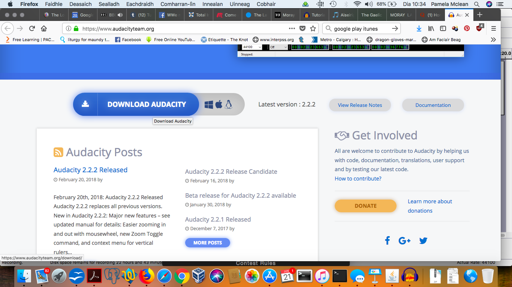Click the “Download” button. Another window will open.
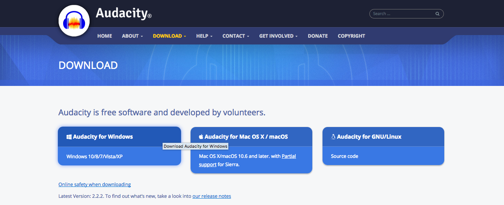Choose and click the appropriate version for your computer.
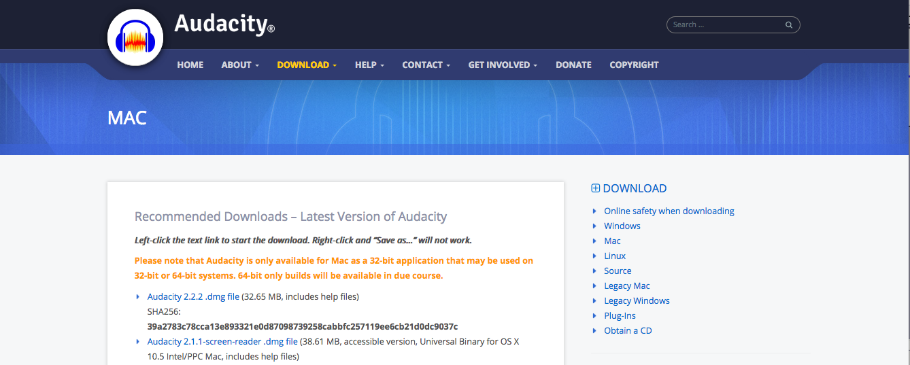Click YET AGAIN where it says “Audacity 2.2.2.dmg file
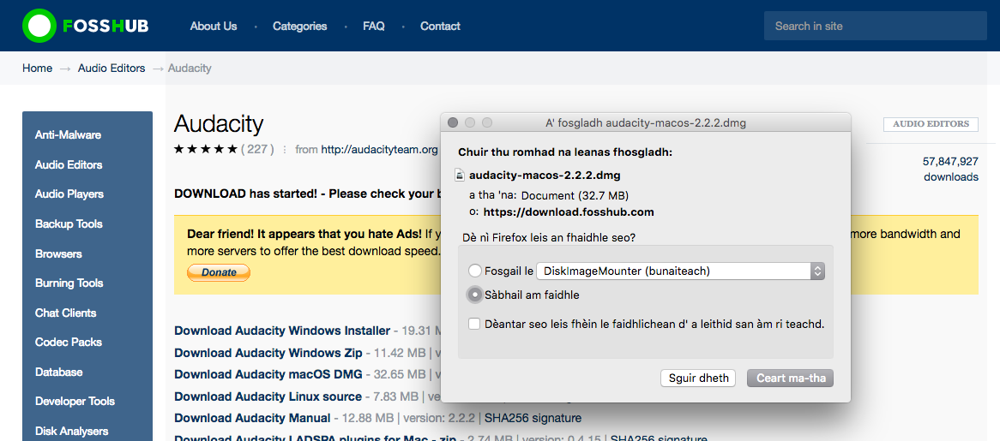When the download starts you will be prompted to confirm that you want to save it. Click “Ceart ma-tha” (“Okay”).
The download will be stored in your downloads directory. It's an automatic installer, with the name that you clicked on up above. Go to your downloads directory and double-click that file.
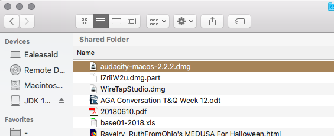The installer will open an installation window. Follow the prompts, which will depend on what operating system you are using. The following pictures show a Mac installation.
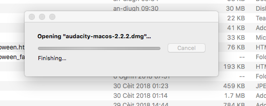Just wait and let it finish opening.
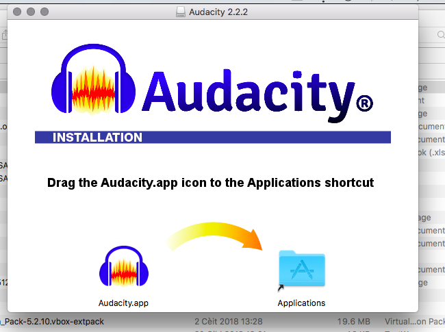Drag the icon to the folder, right there in the install window. Done.
Download Soundflower from https://github.com/mattingalls/Soundflower.
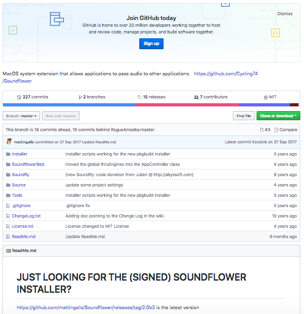Click on that little link down there at the bottom, “ https://github.com/mattingalls/Soundflower/releases/tag/2.0b2”. Another page will open.
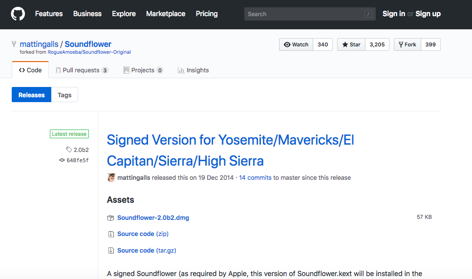Click the first link on this page to download the .dmg file. It will ask you to confirm that you want to download the file.
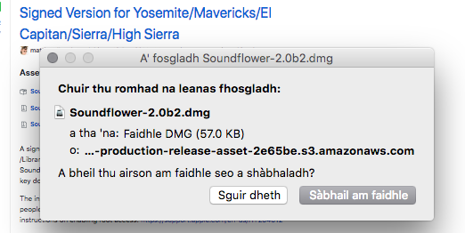Click “Sàbhail am faidhle” (Save File)
The download will be stored in your downloads directory. It's an automatic installer, with the name that you clicked on up above. Go to your downloads directory and find it.
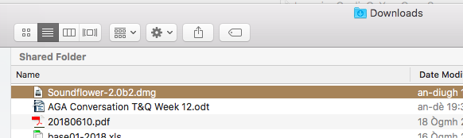Double click on the file that was just downloaded. It opens an directory window.
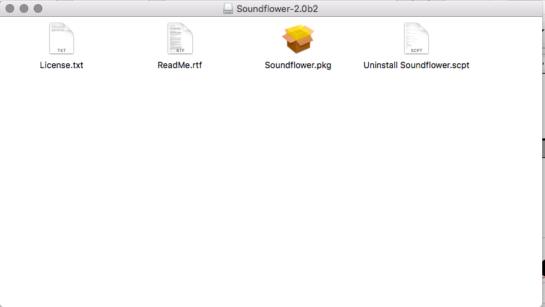Double click on the yellow picture of a box being opened up. That will launch the installer.
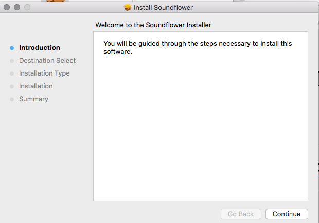Click Continue
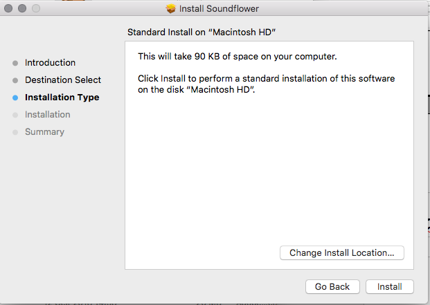Click “Install”. The software will ask for your password
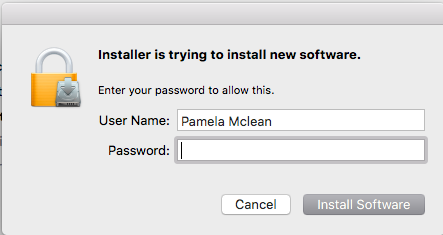Enter your password and click “Install Software”. Software begin installing and you will see the window update several times.
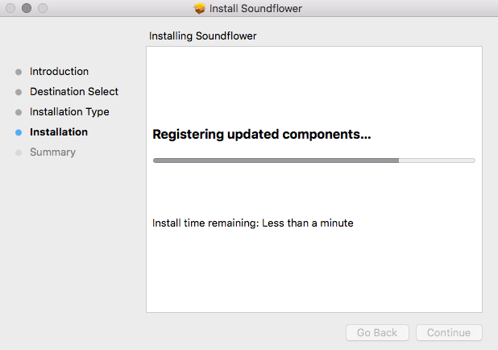Done
Open Audacity on your computer.
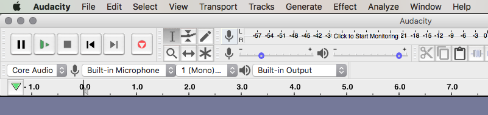In the top left corner are the control buttons for recording and playback – Pause, Play, Stop, to Start, to End, Record:
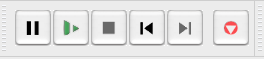Just under these control buttons, there are four fields with drop-down lists used to set up the input (what will be recorded) and the output (what will be played).
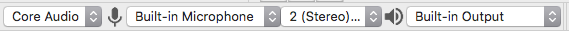If you are using a Mac, leave the first field at “Core Audio” and set the second field to “Soundflower (2ch)”. If you are using Windows, set the first field to “Windows WASAPI” and set the second field to “Speakers (loopback)*”.
*There may be other options in the dropdown box. For Windows systems, always pick something that shows “loopback” for the second window.
Set the third field to “1 (Mono)”.
Set the fourth field to “Built-In Output” (or “Speakers” if you are using external speakers)*.

Click the “Record” button. A window will open and begin drawing a long straight blue line. It is recording, but there is no sound on the input:
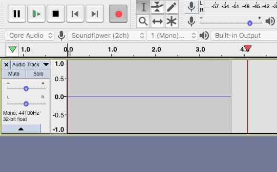Go to https://www.bbc.co.uk/programmes/b007jddy. Begin playing the episode you want to record, and adjust your volume so that it is loud and clear. Then stop the episode. Click on your system speaker icon, and select “Soundflower (2ch)” -- if you are using a Mac – or “Speakers (loopback)” -- if you are using Windows.
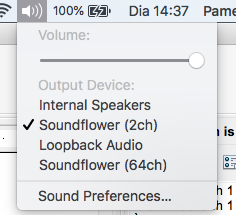Now, start the episode playing again. Return to Audacity: you will see that the blue trace now shows oscillations representing the sound that is being recorded.

Leave the programme playing aloud for the full 90 minutes. If you silence it or turn off your sound, it will stop recording. If you receive any other sounds on your computer, such as beeps or notifications, they will be captured on your recording.
When the programme is complete, go back to the beginning and delete all of the silence – that is, the flat line -- at the beginning of the recording. Then go to File ... Save Project As ... and save it under name with a .aup file extension: for example AithrisNaMaidne20180620.aup.
Aithris Na Maidne is a ninety-minute news review programme covering a range of topics with different presenters and different styles. You may want to break it into a series of shorter “tracks”. Shorter tracks have a number of advantages over a single 90-minute track. Each episode of Aithris Na Maidne follows the same standard pattern, and you can define the tracks based on that pattern. The precise times vary slightly, the following being the track breakdown from June 20 2018:
| Track | From | to | Topic | ||
| 1 | 0.0.0 | 0.0.10 | Ùrlar na Phrograim | ||
| 0.0.10 | 0.0.17 | Greetings and Presenter introductions | |||
| 0.0.17 | 0.1.0 | Ceann Naidheachan | |||
| 0.1.0 | 0.6.33 | Naidheachan | |||
| 2 | 0.6.33 | 0.7.15 | Sìde | ||
| 0.7.15 | 0.8.20 | Turas | |||
| 3 | 0.8.20 | 0.13.10 | Topic one | ||
| 4 | 0.13.10 | 0.17.27 | Topic two | ||
| 5 | 0.17.27 | 0.17.58 | Ceann Naidheachan | ||
| 0.17.58 | 18.32 | Aistichean | |||
| 6 | 0.18.32 | 0.21.20 | Caledonia | ||
| 7 | 0.21.20 | 0.25.03 | Beachdaich Pàipeiran-Naidheachd | ||
| 8 | 0.25.03 | 0.28.03 | Yemen | ||
| 9 | 0.28.03 | 0.29.58 | Coimhearsnachd | ||
| 10 | 0.29.58 | 0.30.37 | Priomh Naidheachan | ||
| 0.30.37 | 0.38.48 | Naidheachan | |||
| 11 | 0.38.48 | 0.39.32 | Sìde | ||
| 0.39.32 | 0.40.25 | Turas | |||
| 12 | 0.40.25 | 0.46.43 | Maggaidh | ||
| 13 | 0.46.43 | 0.49.425 | Eaconomaidh na-h-Alba | ||
| 14 | 0.49.425 | 0.58.18 | Aistichean | ||
| 15 | 0.58.18 | 1.00.26 | Smuain na Maidne | ||
| 1.00.26 | 1.00.485 | Sgeulan aig naoi uirean | |||
| 16 | 1.00.485 | 01.03.56 | Naidheachdan | ||
| 17 | 1.03.56 | 01.04.58 | Sìde | ||
| 01.05.01 | 01.05.30 | Turas | |||
| 01.05.30 | 1.06.37 | Marbh-sanas, Tachartas na sgìre | |||
| 18 | 1.06.37 | 1.10.36 | Clann steach-imriche | ||
| 19 | 1.10.36 | 1.13.29 | Eisreadh craimhinn | ||
| 20 | 1.13.29 | 1.16.575 | George Soros | ||
| 21 | 1.16.575 | 1.17.25 | Ceann Naidheachdan | ||
| 1.17.25 | 1.21.275 | Dà-chànanachas | |||
| 22 | 1.21.275 | 1.26.175 | Dìth dachaigh, Creideas Coitcheann | ||
| 23 | 1.26.175 | flùraichean |
Go through the programme: select about 5 minutes of audio, and copy it into a new Audacity project. Choose File ... Export ... Export as MP3 and save it with a slightly different name and the .mp3 file extension: for example AithrisNaMaidne20180620-1.mp3. When prompted for additional information, make sure you enter exactly the same “Album” name for each track, and make sure you enter the correct “track number”. This will allow you to play all the clips in order when you begin listening via your smartphone or music player.
Continue exporting 5-minute “tracks” in MP3 format until the whole programme is exported. Excise any English segments you notice while doing this. 18 5-minute tracks are easier to manage in your device than one 90-minute track.
Finally, import the mp3 files into your music player or smartphone. To import them into iTunes:
Open iTunes
Choose File ... Add to Library
Select the MP3 tracks you have created
click “Open”
Your Gaelic tracks will be moved to your iTunes library and you can sync them to your device in the same way as any other music.
The first five days are for “Gaelic-washing” your brain*. Play the album over and over, many times a day if possible. Use earbuds to shut out other sounds that might interfere with the Gaelic pathways you are building. Listen while you walk, or do housework, or work out. Do not worry about understanding: just let the Gaelic soak in. If you know any words of Gaelic, listen to see if they pop out at you: some common words to listen for are “agus”, “ag radh”,. If if doesn't disturb your sleep, leave the album playing quietly all night (Sleep and learning researchers are divided about whether this helps, but feel free to try it.
After five days, the programme script should feel familiar. You should be automatically sensing what sounds will come next. Concentrate and try to repeat the script simultaneously with the programme presenters. Set regular times to work on active listening. Choose a regular environment to work in, free of English sounds and English writing and other distractions. Try to listen to the script at least three times a day with this level of concentration. Three times a day is four and a half hours. If you can manage that, then these ten days will add up to 45 hours! If you can't manage it, then remember twice through is still better than one, and once through is better than none.
After fifteen days, you should be becoming comfortable subvocalizing the script simultaneously with the presenters. Now you will work on making those sounds for yourself. You'll need to record your own voice as well as listening to the presenters' voices. There are two good options for doing this:
Play 3 to 7 seconds of the programme on your smartphone's music app, and hit “Pause”.
Switch to the voice memo app and hit “Record”.
Repeat aloud the 3 to 7 seconds you just heard, while recording yourself; then hit “Pause”.
Return to the music app, and repeat
Continue for an hour to an hour and a half, by which time you should have recorded about ten minutes of content.
This option has the advantage that, even though you need to use your hands, it is portable: you can do it while out walking or while working on the treadmill. The disadvantage is that switching back and forth between apps can be quite cumbersome. You may find you forget the phrase while you are managing the apps.
Play 3 to 7 seconds of the programme on your smartphone's music app, and hit “Pause” on device #1.
Hit “Record” on the voice memo app of device #2.
Repeat aloud the 3 to 7 seconds you just heard, while recording yourself; then hit “Pause”.
Return to the music app on device #1, and repeat
Continue for an hour to an hour and a half, by which time you should have recorded about ten minutes of content.
This option has the advantage that you don't lose time and focus switching between apps, and it is still portable. The disadvantage is that you have to be lucky enough to afford two smart devices.
Open Audacity and load in the original .aup file that you created on day zero.
Press “play”, then “pause”, to play 3 to 7 seconds of the programme.
Press “mute” on the original track, then press “record” and repeat the 3 to 7 seconds you have just heard, recording yourself. Audacity will open a second track to contain any new recording. Press “pause”.
Press “solo” on the original track, and repeat.
Continue for an hour to an hour and a half, by which time you should have recorded about ten minutes of content.
This option has the advantage that listen and record can be done with a single app, without switching back and forth. However since it requires a laptop, you are generally restricted to your desk while doing this work.
I continue to search for an integrated listen-and-record smartphone app that allows you to load in your own sound files.
Be aware that the muscles of your face and throat will tire easily at first, because they are being used in new ways. They will strengthen as you continue the work.